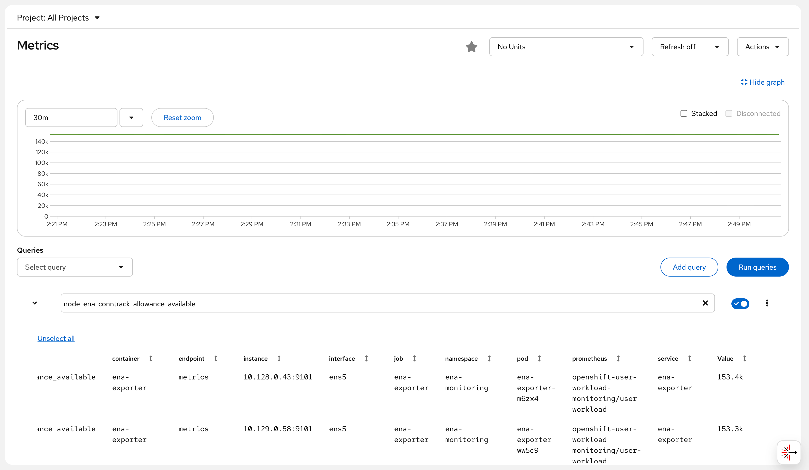

ROSA ENA Network Metrics Monitoring Deployment Guide
Architecture Overview
flowchart TB
subgraph ROSA HCP OCP 4.20 / AWS us-east-2
subgraph Worker Node 1 m6a.xlarge
LG[load-generator Pod<br/>curl x50 per batch<br/>Generates network traffic]
ENA1[ENA NIC ens5<br/>bw_in_allowance_exceeded<br/>bw_out_allowance_exceeded<br/>pps_allowance_exceeded<br/>conntrack_allowance_exceeded<br/>linklocal_allowance_exceeded<br/>conntrack_allowance_available]
EXP1[ENA Exporter Pod<br/>DaemonSet<br/>Image ubi9/python-311<br/>port 9101<br/>hostPID true + privileged]
end
subgraph Worker Node 2 m6a.xlarge
ENA2[ENA NIC ens5<br/>bw_in_allowance_exceeded<br/>bw_out_allowance_exceeded<br/>pps_allowance_exceeded<br/>conntrack_allowance_exceeded<br/>linklocal_allowance_exceeded<br/>conntrack_allowance_available]
EXP2[ENA Exporter Pod<br/>DaemonSet<br/>Image ubi9/python-311<br/>port 9101<br/>hostPID true + privileged]
end
subgraph openshift-user-workload-monitoring
SVC[Headless Service<br/>port 9101 / clusterIP None]
SM[ServiceMonitor<br/>interval 30s / path /metrics]
PROM[Prometheus user-workload<br/>node_ena_ time series]
end
subgraph openshift-monitoring
THANOS[Thanos Querier<br/>Federates all metrics]
CONSOLE[OCP Console<br/>Observe / Metrics<br/>Query Browser]
AM[AlertManager<br/>PrometheusRule ena-alerts<br/>ENABandwidthInThrottled warning<br/>ENAPPSThrottled warning<br/>ENAConntrackThrottled critical<br/>ENALinklocalThrottled critical]
end
end
LG -- "network traffic" --> ENA1
ENA1 -- "nsenter ethtool -S" --> EXP1
ENA2 -- "nsenter ethtool -S" --> EXP2
EXP1 -- "HTTP /metrics" --> SVC
EXP2 -- "HTTP /metrics" --> SVC
SM -- "discovers endpoints" --> SVC
PROM -- "scrapes every 30s" --> SM
THANOS -- "federated query" --> PROM
CONSOLE -- "PromQL" --> THANOS
AM -- "alert rules" --> PROM
style LG fill:#FFE6CC,stroke:#D79B00
style ENA1 fill:#F8CECC,stroke:#B85450
style ENA2 fill:#F8CECC,stroke:#B85450
style EXP1 fill:#D5E8D4,stroke:#82B366
style EXP2 fill:#D5E8D4,stroke:#82B366
style SVC fill:#E1D5E7,stroke:#9673A6
style SM fill:#E1D5E7,stroke:#9673A6
style PROM fill:#E1D5E7,stroke:#9673A6
style THANOS fill:#F0E6FF,stroke:#7B4FA6
style CONSOLE fill:#F0E6FF,stroke:#7B4FA6
style AM fill:#F0E6FF,stroke:#7B4FA6Background and Objectives
ROSA (Red Hat OpenShift Service on AWS) runs on AWS EC2 instances that use the ENA (Elastic Network Adapter) network driver. The AWS ENA driver exposes a set of critical network performance throttling metrics that are essential for diagnosing network bottlenecks:
| Metric | Description |
|---|---|
bw_in_allowance_exceeded |
Number of times inbound bandwidth exceeded the EC2 instance limit (m6a.xlarge baseline: 1.562 Gbps) |
bw_out_allowance_exceeded |
Number of times outbound bandwidth exceeded the instance limit |
pps_allowance_exceeded |
Number of times packets-per-second exceeded the limit (easily triggered by high-frequency API calls or service mesh) |
conntrack_allowance_exceeded |
Number of times the connection tracking table exceeded the limit (equivalent to “connection exhaustion” at the AWS layer) |
linklocal_allowance_exceeded |
Number of times access to 169.254.x.x exceeded the limit (affects DNS and EC2 metadata service) |
conntrack_allowance_available |
Current remaining available connection tracking entries |
Metrics Gap Summary Table
After a thorough investigation of the ROSA cluster Prometheus (2,100 metrics total), below is a complete comparison of customer requirements vs. existing ROSA capabilities:
| Customer Requirement | Available in Prometheus? | Alternative Collection Method | Priority |
|---|---|---|---|
| bw_in_allowance_exceeded | ❌ | ethtool -S / custom DaemonSet | High |
| bw_out_allowance_exceeded | ❌ | ethtool -S / custom DaemonSet | High |
| pps_allowance_exceeded | ❌ | ethtool -S / custom DaemonSet | High |
| conntrack_allowance_exceeded | ❌ | ethtool -S / custom DaemonSet | High |
| linklocal_allowance_exceeded | ❌ | ethtool -S / custom DaemonSet | High |
| conntrack_allowance_available | ❌ | ethtool -S / custom DaemonSet | High |
| NAT Gateway ErrorPortAllocation | ❌ | CloudWatch Exporter | Medium |
| NAT Gateway ActiveConnectionCount | ❌ | CloudWatch Exporter | Medium |
| EBSIOBalance% | ❌ | CloudWatch Exporter | Medium |
| EBSByteBalance% | ❌ | CloudWatch Exporter | Medium |
| Cross-AZ Latency | ❌ | Requires custom measurement | Low |
| ECR Pull Rate | ❌ | CloudWatch Exporter | Low |
| node_filefd_allocated | ✅ | Already available | - |
| conntrack entries/limit | ✅ | Already available | - |
| ListenOverflows/ListenDrops | ✅ | Already available | - |
| TCP TIME_WAIT | ✅ | Already available | - |
| CoreDNS metrics | ✅ | Already available | - |
| somaxconn value | ⚠️ | Obtained via sysctl, not Prometheus | Low |
| ip_local_port_range | ⚠️ | Obtained via sysctl, not Prometheus | Low |
Problem this document solves: The 6 high-priority ENA network throttling metrics in the table above. OpenShift’s built-in node_exporter includes an ethtool collector, but it is disabled by default, and OpenShift does not provide a configuration option to enable it (RFE-7342 will be supported in OCP 4.22). This means the ENA metrics listed above are not available in ROSA’s Prometheus.
Solution: Deploy a custom ENA Metrics
Exporter DaemonSet that uses nsenter to enter the
host network namespace, calls the host’s ethtool
command to read ENA statistics, and exposes them in Prometheus
format.
Environment Information
| Item | Value |
|---|---|
| Cluster Type | ROSA HCP (Hosted Control Plane) |
| OCP Version | 4.20.19 |
| Worker Nodes | 2 × m6a.xlarge (4 vCPU, 16GB RAM) |
| Network | Baseline 1.562 Gbps, burst up to 12.5 Gbps |
| ENA Driver | Kernel built-in (5.14.0-570.107.1.el9_6.x86_64) |
| ENA Interface Name | ens5 |
| Region | us-east-2 |
Deployment Steps
Step 1: Enable User Workload Monitoring
OpenShift’s User Workload Monitoring must be explicitly enabled for custom exporter metrics to be ingested by Prometheus.
cat <<'EOF' | oc apply -f -
apiVersion: v1
kind: ConfigMap
metadata:
name: cluster-monitoring-config
namespace: openshift-monitoring
data:
config.yaml: |
enableUserWorkload: true
EOFVerification:
oc get pods -n openshift-user-workload-monitoring
# Expected output:
# NAME READY STATUS RESTARTS AGE
# prometheus-operator-6cd8958974-nwqrf 2/2 Running 0 8s
# prometheus-user-workload-0 5/6 Running 0 6s
# prometheus-user-workload-1 5/6 Running 0 6s
# thanos-ruler-user-workload-0 4/4 Running 0 5s
# thanos-ruler-user-workload-1 4/4 Running 0 5sStep 2: Create Namespace and ServiceAccount
# Create dedicated namespace
oc new-project ena-monitoring
# Create ServiceAccount
oc create serviceaccount ena-exporter -n ena-monitoring
# Grant privileged SCC (requires hostPID and nsenter permissions)
oc adm policy add-scc-to-user privileged -z ena-exporter -n ena-monitoringVerification:
oc get serviceaccount ena-exporter -n ena-monitoring
# Expected output:
# NAME SECRETS AGE
# ena-exporter 0 5sStep 3: Create ENA Exporter Python Script ConfigMap
The core logic of the ENA Exporter: use
nsenter -t 1 --mount --net to enter the host’s
mount and network namespace, execute the host’s
ethtool -S ens5 command, parse the output, and
expose it in Prometheus format.
cat <<'YAML' | oc apply -f -
apiVersion: v1
kind: ConfigMap
metadata:
name: ena-exporter-script
namespace: ena-monitoring
data:
ena_exporter.py: |
#!/usr/bin/env python3
"""
ENA Metrics Exporter for ROSA/OpenShift
Uses nsenter to read ethtool stats from the host network namespace.
No extra packages needed - uses only Python stdlib.
"""
import subprocess
import http.server
import socketserver
import os
PORT = 9101
INTERFACE = os.getenv('ENA_INTERFACE', 'ens5')
# ENA throttling metrics (counters - monotonically increasing)
ENA_THROTTLE_METRICS = [
'bw_in_allowance_exceeded',
'bw_out_allowance_exceeded',
'pps_allowance_exceeded',
'conntrack_allowance_exceeded',
'linklocal_allowance_exceeded',
]
# ENA capacity metrics (gauges - current value)
ENA_GAUGE_METRICS = [
'conntrack_allowance_available',
]
# ENA SRD metrics
ENA_SRD_METRICS = [
'ena_srd_mode',
'ena_srd_tx_pkts',
'ena_srd_rx_pkts',
'ena_srd_resource_utilization',
]
ALL_ENA_METRICS = ENA_THROTTLE_METRICS + ENA_GAUGE_METRICS + ENA_SRD_METRICS
def get_ena_stats():
"""Run ethtool via nsenter into the host's mount+net namespace."""
try:
result = subprocess.run(
['nsenter', '-t', '1', '--mount', '--net', '--',
'ethtool', '-S', INTERFACE],
capture_output=True, text=True, timeout=10
)
if result.returncode != 0:
print(f"[WARN] ethtool failed: {result.stderr.strip()}", flush=True)
return {}
metrics = {}
for line in result.stdout.split('\n'):
line = line.strip()
if ':' not in line:
continue
key, _, val = line.partition(':')
key = key.strip()
val = val.strip()
if key in ALL_ENA_METRICS:
try:
metrics[key] = float(val)
except ValueError:
pass
return metrics
except Exception as e:
print(f"[ERROR] {e}", flush=True)
return {}
class MetricsHandler(http.server.BaseHTTPRequestHandler):
def do_GET(self):
if self.path != '/metrics':
self.send_response(404)
self.end_headers()
self.wfile.write(b'Not Found\n')
return
stats = get_ena_stats()
lines = []
for key in ALL_ENA_METRICS:
metric_name = f'node_ena_{key}'
val = stats.get(key, 0)
lines.append(f'# HELP {metric_name} AWS ENA driver statistic: {key}')
if key in ENA_GAUGE_METRICS:
lines.append(f'# TYPE {metric_name} gauge')
else:
lines.append(f'# TYPE {metric_name} counter')
lines.append(f'{metric_name}{{interface="{INTERFACE}"}} {val}')
body = '\n'.join(lines) + '\n'
self.send_response(200)
self.send_header('Content-Type', 'text/plain; version=0.0.4; charset=utf-8')
self.end_headers()
self.wfile.write(body.encode())
def log_message(self, fmt, *args):
pass # suppress per-request logs
if __name__ == '__main__':
print(f"[INFO] ENA Exporter starting on port {PORT}, interface={INTERFACE}", flush=True)
with socketserver.TCPServer(('', PORT), MetricsHandler) as httpd:
httpd.serve_forever()
YAMLStep 4: Deploy DaemonSet, Service, and ServiceMonitor
cat <<'YAML' | oc apply -f -
apiVersion: apps/v1
kind: DaemonSet
metadata:
name: ena-exporter
namespace: ena-monitoring
labels:
app: ena-exporter
spec:
selector:
matchLabels:
app: ena-exporter
template:
metadata:
labels:
app: ena-exporter
spec:
serviceAccountName: ena-exporter
hostPID: true # Required to access host PID 1 for nsenter
nodeSelector:
kubernetes.io/os: linux
tolerations:
- operator: Exists
containers:
- name: ena-exporter
image: registry.access.redhat.com/ubi9/python-311:latest
command: ["python3", "/scripts/ena_exporter.py"]
ports:
- containerPort: 9101
name: metrics
protocol: TCP
env:
- name: ENA_INTERFACE
value: "ens5"
securityContext:
privileged: true # Required for nsenter to enter host namespace
runAsUser: 0
volumeMounts:
- name: script
mountPath: /scripts
resources:
requests:
cpu: 10m
memory: 32Mi
limits:
cpu: 100m
memory: 64Mi
volumes:
- name: script
configMap:
name: ena-exporter-script
defaultMode: 0755
---
apiVersion: v1
kind: Service
metadata:
name: ena-exporter
namespace: ena-monitoring
labels:
app: ena-exporter
spec:
ports:
- name: metrics
port: 9101
targetPort: 9101
protocol: TCP
selector:
app: ena-exporter
clusterIP: None # Headless service, allows Prometheus to discover all endpoints
---
apiVersion: monitoring.coreos.com/v1
kind: ServiceMonitor
metadata:
name: ena-exporter
namespace: ena-monitoring
labels:
app: ena-exporter
spec:
selector:
matchLabels:
app: ena-exporter
endpoints:
- port: metrics
interval: 30s
path: /metrics
YAMLVerify pod status:
oc get pods -n ena-monitoring -o wide
# Actual output:
# NAME READY STATUS RESTARTS AGE IP NODE
# ena-exporter-m6zx4 1/1 Running 0 57s 10.128.0.43 ip-10-0-0-69.us-east-2.compute.internal
# ena-exporter-ww5c9 1/1 Running 0 57s 10.129.0.58 ip-10-0-0-181.us-east-2.compute.internalStep 5: Verify the Metrics Endpoint
# View pod startup logs
oc logs -n ena-monitoring ena-exporter-m6zx4
# Actual output:
# [INFO] ENA Exporter starting on port 9101, interface=ens5
# Directly curl the metrics endpoint
oc exec -n ena-monitoring ena-exporter-m6zx4 -- curl -s http://localhost:9101/metrics
# Actual output:
# # HELP node_ena_bw_in_allowance_exceeded AWS ENA driver statistic: bw_in_allowance_exceeded
# # TYPE node_ena_bw_in_allowance_exceeded counter
# node_ena_bw_in_allowance_exceeded{interface="ens5"} 0.0
# # HELP node_ena_bw_out_allowance_exceeded AWS ENA driver statistic: bw_out_allowance_exceeded
# # TYPE node_ena_bw_out_allowance_exceeded counter
# node_ena_bw_out_allowance_exceeded{interface="ens5"} 0.0
# # HELP node_ena_pps_allowance_exceeded AWS ENA driver statistic: pps_allowance_exceeded
# # TYPE node_ena_pps_allowance_exceeded counter
# node_ena_pps_allowance_exceeded{interface="ens5"} 0.0
# # HELP node_ena_conntrack_allowance_exceeded AWS ENA driver statistic: conntrack_allowance_exceeded
# # TYPE node_ena_conntrack_allowance_exceeded counter
# node_ena_conntrack_allowance_exceeded{interface="ens5"} 0.0
# # HELP node_ena_linklocal_allowance_exceeded AWS ENA driver statistic: linklocal_allowance_exceeded
# # TYPE node_ena_linklocal_allowance_exceeded counter
# node_ena_linklocal_allowance_exceeded{interface="ens5"} 0.0
# # HELP node_ena_conntrack_allowance_available AWS ENA driver statistic: conntrack_allowance_available
# # TYPE node_ena_conntrack_allowance_available gauge
# node_ena_conntrack_allowance_available{interface="ens5"} 153423.0Step 6: Verify Metrics are Being Scraped via Prometheus API
THANOS_URL=$(oc get route thanos-querier -n openshift-monitoring -o jsonpath='{.spec.host}')
TOKEN=$(oc whoami -t)
# Query the conntrack_allowance_available metric
curl -sk -H "Authorization: Bearer $TOKEN" \
"https://$THANOS_URL/api/v1/query?query=node_ena_conntrack_allowance_available&namespace=ena-monitoring" \
| python3 -c "
import json,sys
d=json.load(sys.stdin)
print('Status:', d.get('status'))
for r in d['data']['result']:
print(f' pod={r[\"metric\"][\"pod\"]} node={r[\"metric\"][\"instance\"]} value={r[\"value\"][1]}')
"
# Actual output:
# Status: success
# pod=ena-exporter-m6zx4 node=10.128.0.43:9101 value=153421
# pod=ena-exporter-ww5c9 node=10.129.0.58:9101 value=153437Step 7: Deploy Demo Application (Load Generator)
Deploy a load generator that continuously generates network traffic to simulate real-world network load scenarios:
cat <<'YAML' | oc apply -f -
apiVersion: v1
kind: Namespace
metadata:
name: ena-demo
---
apiVersion: apps/v1
kind: Deployment
metadata:
name: load-generator
namespace: ena-demo
spec:
replicas: 1
selector:
matchLabels:
app: load-generator
template:
metadata:
labels:
app: load-generator
spec:
containers:
- name: load-gen
image: registry.access.redhat.com/ubi9/ubi-minimal:latest
command:
- /bin/sh
- -c
- |
echo "Starting load generator..."
while true; do
for i in $(seq 1 50); do
curl -s --connect-timeout 1 -o /dev/null \
https://api.rosa-bvjtr.d71w.p3.openshiftapps.com/healthz &
done
wait
echo "$(date): Sent 50 requests"
done
resources:
requests:
cpu: 100m
memory: 64Mi
limits:
cpu: 500m
memory: 128Mi
YAML
# Wait for pod to be ready
oc get pods -n ena-demo -wView load generator logs:
oc logs -n ena-demo deployment/load-generator --tail=10
# Actual output:
# Wed May 6 06:24:08 UTC 2026: Sent 50 requests
# Wed May 6 06:24:09 UTC 2026: Sent 50 requests
# Wed May 6 06:24:10 UTC 2026: Sent 50 requests
# Wed May 6 06:24:11 UTC 2026: Sent 50 requests
# Wed May 6 06:24:12 UTC 2026: Sent 50 requestsMonitoring Display
View ENA Metrics in OpenShift Console
Access the OpenShift Metrics page via the following URL:
https://console-openshift-console.apps.rosa.rosa-bvjtr.d71w.p3.openshiftapps.com/monitoring/query-browser?query0=node_ena_conntrack_allowance_availableAfter logging in, you can see the ENA
conntrack_allowance_available metric chart from
both worker nodes (approximately 153,000 available connection
tracking entries), which remains stable over time, indicating
that the current network load has not reached the limit.
Screenshot note: The Console Observe → Metrics page shows the
node_ena_conntrack_allowance_availablemetric, with the green line holding steady at approximately 140k.

Query All ENA Metrics via Thanos Querier API
THANOS_URL=$(oc get route thanos-querier -n openshift-monitoring -o jsonpath='{.spec.host}')
TOKEN=$(oc whoami -t)
# Query all ENA throttling metrics
for metric in \
node_ena_bw_in_allowance_exceeded \
node_ena_bw_out_allowance_exceeded \
node_ena_pps_allowance_exceeded \
node_ena_conntrack_allowance_exceeded \
node_ena_linklocal_allowance_exceeded \
node_ena_conntrack_allowance_available; do
echo "--- $metric ---"
curl -sk -H "Authorization: Bearer $TOKEN" \
"https://$THANOS_URL/api/v1/query?query=$metric&namespace=ena-monitoring" | \
python3 -c "import json,sys; d=json.load(sys.stdin); [print(f' pod={r[\"metric\"][\"pod\"]} => {r[\"value\"][1]}') for r in d['data']['result']]"
done
# Actual output (2026-05-06 14:24 UTC+8):
# --- node_ena_bw_in_allowance_exceeded ---
# pod=ena-exporter-m6zx4 => 0
# pod=ena-exporter-ww5c9 => 0
# --- node_ena_bw_out_allowance_exceeded ---
# pod=ena-exporter-m6zx4 => 0
# pod=ena-exporter-ww5c9 => 0
# --- node_ena_pps_allowance_exceeded ---
# pod=ena-exporter-m6zx4 => 0
# pod=ena-exporter-ww5c9 => 0
# --- node_ena_conntrack_allowance_exceeded ---
# pod=ena-exporter-m6zx4 => 0
# pod=ena-exporter-ww5c9 => 0
# --- node_ena_linklocal_allowance_exceeded ---
# pod=ena-exporter-m6zx4 => 0
# pod=ena-exporter-ww5c9 => 0
# --- node_ena_conntrack_allowance_available ---
# pod=ena-exporter-m6zx4 => 153362
# pod=ena-exporter-ww5c9 => 153289Result Interpretation:
- All “exceeded” metrics are 0: current network load has not surpassed AWS ENA limits
- conntrack_allowance_available ≈ 153,000: the m6a.xlarge instance has ample remaining AWS-level connection tracking entries
- Metrics come from two worker nodes, each corresponding to one DaemonSet pod
Optional: Configure Alert Rules
ENA Network Throttling Alerts
cat <<'YAML' | oc apply -f -
apiVersion: monitoring.coreos.com/v1
kind: PrometheusRule
metadata:
name: ena-alerts
namespace: ena-monitoring
spec:
groups:
- name: ena.rules
rules:
# Inbound bandwidth throttled (potential packet loss)
- alert: ENABandwidthInThrottled
expr: rate(node_ena_bw_in_allowance_exceeded[5m]) > 0
for: 2m
labels:
severity: warning
annotations:
summary: "Node {{ $labels.pod }} inbound bandwidth throttled by AWS ENA"
description: |
Node {{ $labels.pod }} inbound bandwidth has exceeded the EC2 instance limit.
m6a.xlarge baseline: 1.562 Gbps, burst: 12.5 Gbps.
Sustained throttling will cause packets to be dropped.
Recommendation: Check for high-traffic applications; consider upgrading the instance type.
# PPS limit exceeded (high-frequency small packets, e.g., mTLS/API gateway)
- alert: ENAPPSThrottled
expr: rate(node_ena_pps_allowance_exceeded[5m]) > 0
for: 2m
labels:
severity: warning
annotations:
summary: "Node {{ $labels.pod }} packet rate throttled by AWS ENA"
description: |
Node {{ $labels.pod }} packet rate has exceeded the limit.
Service Mesh (mTLS) and API gateways (e.g., Kong) are prone to triggering this limit.
Recommendation: Check for high volumes of small-packet traffic; consider using larger frame sizes.
# AWS connection tracking exceeded (distinct from Linux conntrack)
- alert: ENAConntrackThrottled
expr: rate(node_ena_conntrack_allowance_exceeded[5m]) > 0
for: 2m
labels:
severity: critical
annotations:
summary: "Node {{ $labels.pod }} AWS ENA connection tracking throttled"
description: |
This is a connection tracking limit enforced at the AWS security group level (not Linux netfilter conntrack).
When exceeded, new connections are rejected by the AWS network layer, causing intermittent connection failures.
# Link-local exceeded (DNS/metadata service affected)
- alert: ENALinklocalThrottled
expr: rate(node_ena_linklocal_allowance_exceeded[5m]) > 0
for: 1m
labels:
severity: critical
annotations:
summary: "Node {{ $labels.pod }} link-local traffic throttled (DNS affected!)"
description: |
AWS limits 169.254.x.x traffic to 1024 pps.
This limit affects the VPC DNS resolver (.2 address) and EC2 metadata (IMDSv2).
Throttling will cause DNS query timeouts and IAM role retrieval failures!
Recommendation: Deploy NodeLocal DNSCache immediately to reduce link-local DNS requests.
# Connection tracking nearly exhausted (early warning)
- alert: ENAConntrackLow
expr: node_ena_conntrack_allowance_available < 10000
for: 5m
labels:
severity: warning
annotations:
summary: "Node {{ $labels.pod }} AWS ENA connection tracking entries below 10000"
YAMLKnown Limitations and Considerations
ROSA Classic vs. HCP: This solution works on both ROSA HCP and Classic. ROSA Classic may have an SRE-deployed
sre-ebs-iops-reporter, but there is no ENA-related monitoring.Interface Name: This example uses
ens5(the default ENA interface name for RHCOS on AWS). If multiple NICs are present, you can specify a different interface (e.g.,eth0) via theENA_INTERFACEenvironment variable in the DaemonSet.ethtool Version Requirement: The ENA driver requires version 2.2.10+ to support statistics. In this environment, the ENA driver is the kernel 5.14 built-in version, which is fully supported.
RFE-7342 Tracking: Red Hat is developing the feature to add the ethtool collector to
NodeExporterCollectorConfig. Once merged, it can be configured directly via ConfigMap without deploying this DaemonSet. It is recommended to open a Support Case to help prioritize this RFE.Permissions Note:
privileged: trueandhostPID: trueare required fornsenterto enter the host namespace. In production environments, it is recommended to use NetworkPolicy to isolate inbound and outbound traffic for theena-monitoringnamespace.
Cleanup (Optional)
To remove all resources:
oc delete namespace ena-monitoring
oc delete namespace ena-demo
oc delete configmap cluster-monitoring-config -n openshift-monitoring